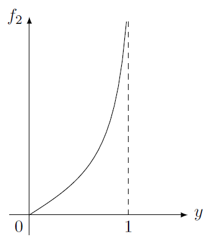
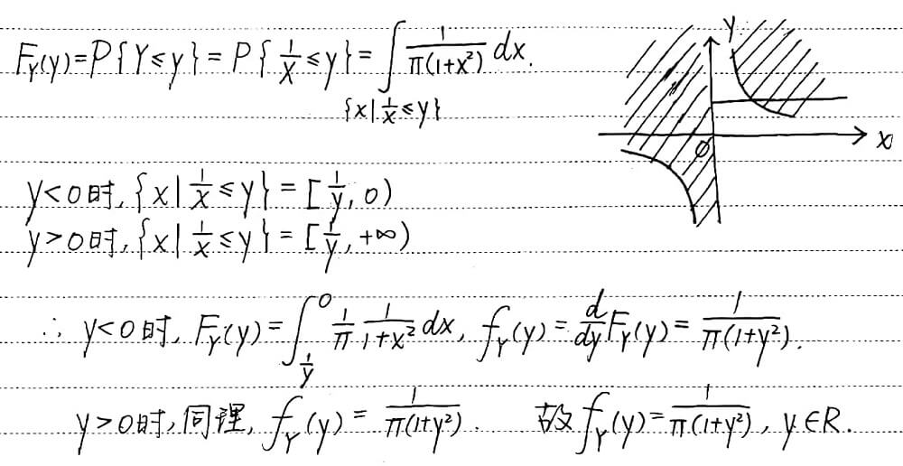

Random Variables¶
Deriving the p.d.f. of \(X^2\) When \(X\) Has an Uniform Distribution (Example 3.8.11)¶
Suppose that \(X\) has a uniform distribution on the interval \([-1, 1]\), so
We shall determine the p.d.f of the random variable \(Y = X^2\).
Since \(Y = X^2\), then \(Y\) must belong to the interval \(0\le Y \le 1\). Thus, for each value of \(Y\) such that \(0 \le y \le 1\), the d.f. \(G(y)\) of \(Y\) is
For \(0 < y < 1\), it follows that the p.d.f. \(g(y)\) of \(Y\) is
Choosing Points from Uniform Distributions (Example 3.6.51)¶
Suppose that a point \(X\) is chosen from a uniform distribution on the interval \([0, 1]\); and that after the value \(X = x\) has been observed (\(0 < x < 1\)), a point \(Y\) is then chosen from a uniform distribution on the interval \([x, 1]\). We shall derive the marginal p.d.f. of \(Y\).
Since \(X\) has a uniform distribution, the marginal p.d.f. of \(X\) is as follows:
Similarly, for each value \(X = x\) (\(0 < a < 1\)), the conditional distribution of \(Y\) is a uniform distribution on the interval \([x, 1]\). Since the length of this interval is \(1 - x\), the conditional p.d.f. of \(Y\) given that \(X = x\) will be
It follows that the joint p.d.f. of \(X\) and \(Y\) will be
Thus, for \(0 < y < 1\), the value of the marginal p.d.f. \(f_2(y)\) of \(Y\) will be
Furthermore, since \(Y\) cannot be outside the interval \(0 < y < 1\), then \(f_2(y) = 0\) for \(y \le 0\) or \(y \ge 1\). This marginal p.d.f. \(f_2\) is sketched in the figure below. It is interesting to note that in this example the function \(f_2\) is unbounded.

Cauchy-Schwarz Inequality1¶
For all random variables \(U\) and \(V\),
If, in addition, the right-hand side of Eq. (1) is finite, then the two sides of Eq. (1) equal the same value if and only if there are constants \(a\) and \(b\) such that \(aU+bV=0\) with probability 1.
Proof. If \(E(U^2)=0\), then \(\Pr(U=0)=1\). Therefore, it must also be true that \(\Pr(UV=0)=1\). Hence, \(E(UV)=0\), and the relation (1) is satisfied. Similarly, if \(E(V^2)=0\), then the relation (1) will be satisfied. We can assume, therefore, that \(E(U^2)>0\) and \(E(V^2)>0\). Moreover, if either \(E(U^2)\) or \(E(V^2)\) is infinite, then the right side of the relation (1) will be infinite. In this case, the relation (1) will surely be satisfied.
For the rest of the proof, assume that \(0<E(U^2)<\infty\) and \(0<E(V^2)<\infty\). For all numbers \(a\) and \(b\),
and
If we let \(a = \big[E(V^2)\big]^{1/2}\) and \(b = \big[E(U^2)\big]^{1/2}\), then it follows from the relation (2) that
It also follows from the relation (3) that
These two relations together imply that the relation (1) is satisfied.
1
设随机变量 \(X\) 服从柯西分布，其概率分布为
求 \(Y = \dfrac{1}{X}\) 的概率密度.
Hint
